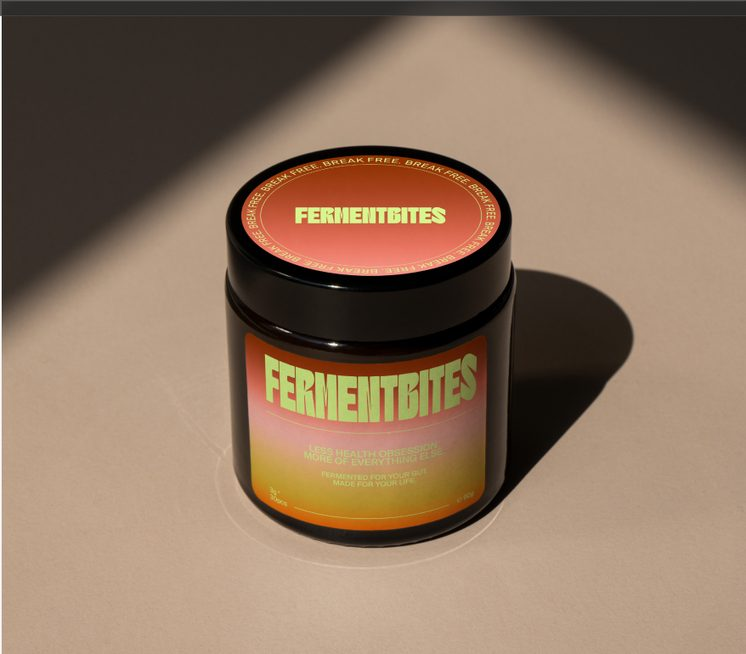

FermentBites bringt Next-Level Mikrobiom-Nutrition auf den Tisch – wissenschaftlich entwickelt in Kooperation mit dem Fraunhofer IVV, alltagstauglich, super lecker und ganz ohne Optimierungswahn.

Wir könnten dir einfach nur ein Gummy verkaufen, weil es so gut schmeckt. Doch das reicht uns nicht: Wir liefern dir die geballte Pflanzenvielfalt der Natur – fermentiert, mit Polyphenolen und wertvollen Zutaten veredelt und in kleine, köstliche Würfel gepackt. Unsere FERMENTBITES.
Über 50 % wasserlösliche Ballaststoffe – u. a. durch den Zusatz von Akazienfaser als funktionellem Trägerstoff.
Über 30 % bioaktivierte Mikrofasern, die im Fermentationsprozess feiner aufgeschlossen werden.
Hoch bioverfügbare Polyphenole – durch Fermentation in besser verfügbare Verbindungen umgewandelt.
Enthält vorgeformte kurzkettige Fettsäuren (SCFAs), darunter Acetat und Butyrat.
Alle Angaben beziehen sich auf unseren Fermentationskomplex als Zutat, nicht auf ein einzelnes FermentBites-Gummy.
Für zusätzliche präbiotische Kraft veredeln wir unseren Fermentationskomplex mit hochwertiger Akazienfaser – das erhöht den Anteil löslicher Ballaststoffe auf über 50 %. Enthalten sind außerdem 7 Vitamine und Butyrat.
Die Vielfalt unseres Mikrobioms wird durch viele Faktoren des modernen Alltags beeinflusst – von der Ernährung bis zur Umgebung, in der wir leben.
Unser Fermentationskomplex vereint ein breiteres Spektrum an Ballaststoffen und bioaktiven Verbindungen als viele klassische Präbiotika – fermentiert und mit zertifiziertem Low-FODMAP-Status.
📍 Wir sind am 9. & 10. Oktober 2026 mit einem Stand auf der Berlin Food Week im BIKINI Berlin – komm vorbei und probiere FermentBites exklusiv als Erste:r.
Unser Fermentationskomplex durchläuft vier aufeinanderfolgende Fermentationsstufen – mit jeweils einer eigenen Mikroorganismengruppe (Schimmelpilz, Hefe, Milchsäurebakterien, Essigsäurebakterien), die unter für sie optimalen Bedingungen arbeitet. Der gesamte Prozess läuft in einem geschlossenen System mit sterilen Startbedingungen und dauert insgesamt rund 8 Wochen.
Ja. Alle 30+ fermentierten Frucht- und Gemüsesorten werden zunächst zu einem gemeinsamen Konzentrat verarbeitet und anschließend zusammen über alle vier Fermentationsstufen hinweg fermentiert – nicht einzeln fermentiert und später gemischt.
Nein. Die eingesetzten Mikroorganismen dienen ausschließlich als Fermentationshilfsstoffe und werden nach der Fermentation gezielt inaktiviert. Unser fertiger Fermentationskomplex enthält keine lebenden Mikroorganismen mehr.
Akazienfaser stammt aus dem Harz der Bäume Acacia senegal und Acacia seyal und besteht zu über 90 % aus löslichem Ballaststoff. Wir setzen sie gezielt ein, um den Anteil löslicher Ballaststoffe in unserem Fermentationskomplex auf über 50 % zu erhöhen.
Unser Fermentationskomplex – die fermentierten Frucht- und Gemüsesorten inklusive der enthaltenen Akazienfaser – ist von der Monash University als „Low FODMAP Certified™" zertifiziert. Das Zertifikat bezieht sich auf diesen Fermentationskomplex als Zutat.
Ja, FermentBites ist vegan formuliert.
Ja – wir setzen keinen Zucker wie Saccharose oder Glukosesirup zu. Für die Süße verwenden wir die Zuckeraustauschstoffe Maltit und Sorbit. Hinweis: Bei übermäßigem Verzehr können maltithaltige Lebensmittel abführend wirken.
Ja, unsere Rezeptur enthält keine glutenhaltigen Zutaten.
Nein – unsere Gummis sind pflanzenbasiert (ohne Gelatine) und enthalten keine Milch-, Ei-, Nuss- oder Soja-Zutaten.
Ein Bite wiegt ca. 3,5 g. Die empfohlene Tagesportion sind 2 Bites (7 g) – bei 60 Bites pro Dose ergibt das 30 Tagesportionen.
Pro Tagesportion (2 Bites) stecken sieben Vitamine und Mineralstoffe in FermentBites: Vitamin A, D3, E, C, Niacin (B3), Vitamin B6 und Zink – jeweils in signifikanter Menge gemäß NRV-Referenzwerten.
Wir produzieren in Deutschland - immer frisch & in limitierten Chargen.